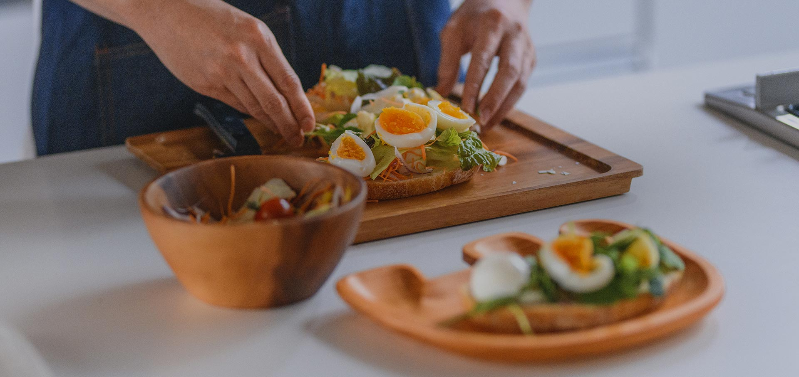

Topics
2021.3.16
カレーたまごディップ
ディップ以外の食べ方として、食パンに挟みサンドイッチにすることも可能です。
2021.03.19
ゆでたまごのチーズパン粉焼き
ゆでたまごのスライサーがない場合、包丁の刃にラップを巻き付け切ると、きれいに切ることができます。
2021.03.24
シラスと大場の出汁巻き
旨味の強いシラスを使ったふわふわ出し巻きのご紹介です。 大葉の香りが爽やかでお弁当にもぴったり。
NEWS

個人のお客様
たまごAtoZ
商品紹介
生産者コード検索

法人のお客様
相場情報
業界ニュース
資料室

採用情報
会社を知る
社員を知る
働く・キャリアを知る
募集要項
FAQ

企業情報
会社概要
沿革
関連会社リンク
社長メッセージ
経営理念
CSR活動
事業所案内

JR全農たまごができること
コンプライアンス